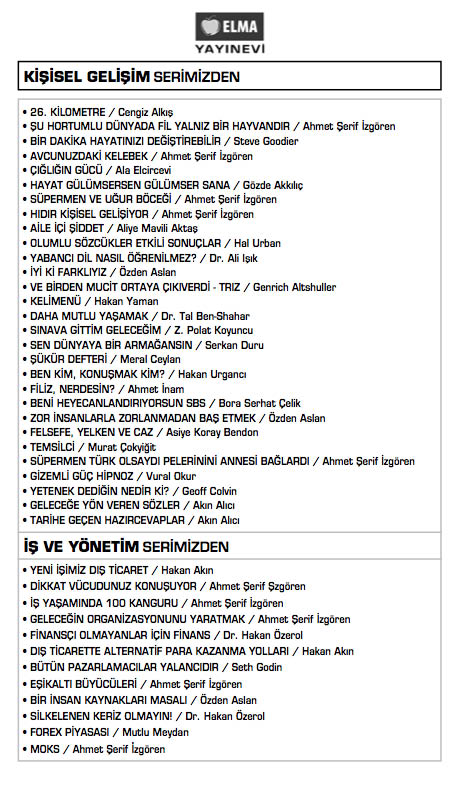
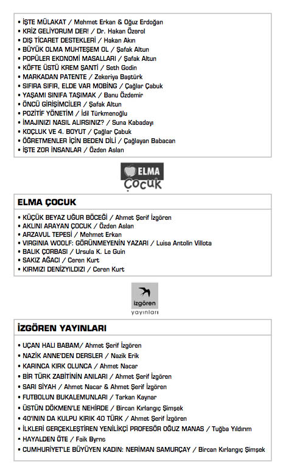

Kaynakça
Ahmet Haşim, Bize Göre, Altın Kitaplar, 2005
Aisopos Masalları, Çeviren: Nurullah Ataç, Yapı Kredi Yayınları, 2004
Akın Alıcı, Hayata Yön Veren Sözler, Epsilon Yayınları, 2003 Akın Alıcı, Hayata Yön Veren Öyküler, Epsilon Yayınları,
2004
Albert Einstein, Benim Gözümden Dünya, Alfa Yayınları,
2010
Albert Einstein, izafiyet Teorisi, Say Yayıncılık, 1989 Alexandre Dumas, Monte Cristo Kontu, İthaki Yayınları,
2003
Benjamin Franklin, B. F. Takvimi, Beyaz Yayınları, 2000 Benjamin P. Thomas, Abraham Lincoln, Nebioğlu Yayınevi,
1952
Bertolt Brecht, Çev.: F. Ofluoğlu, Ö.Nutku, Y.Onay, A.Çalışlar, A.Cemal, A.Selen, Y.Erten, Bütün Oyunları Cilt-7, Galilei’nin Yaşamı, Mitos Boyut Yayınları, 1997
C. C. W. Taylor, Düşüncenin Ustaları/Sokrates, Altın Kitaplar, 2002
Demosthenes, Söylevler, Dost Yayınevi, 2001 218 219
Diogenes Laertios, Ünlü Filozofların Yaşamları ve Öğretileri, Yapı Kredi Yayınları, 2010
Gerard’t Hooft, Maddenin Son Yapı Taşları, TÜBİTAK Yayınları, 2003
Jack Foster, Fikir Nasıl Bulunur? MediaCat Yayınları, 2005
James MacLachlan, Galileo Galilei, TÜBİTAK Yayınları, 2008
Jean de La Fontaine, Masallar, Çeviren: Sabahattin Eyuboğ-lu, Türkiye İş Bankası Yayınları, 2007
Jeremy Bernstein, Albert Einstein Fiziğin Sınırları, TÜBİTAK
Yayınları, 2007
J. Richard Gott, Einstein Evreninde Zaman Yolculuğu, Arkadaş Yayınları, 2009
Mazhar Müfit Kansu, Erzurum’dan Ölümüne Kadar Atatürk’le Beraber. I-II Cilt. TTK Yayınları, 1997
Memet Fuat, Ahmet Haşim, Yapı Kredi Yayınları, 1999
Mevlâna Celaleddin Rumi, Gökyüzüne Merdiven, Om Yayınları, 2002
Mevlâna Celaleddin Rumi, Mesnevi’den Seçmeler, Rumi Yayınları, 2010
Milton Meltzer, Benjamin Franklin - Yeni Amerikalı, Epsilon
Yayınları, 2004
Mustafa Kemal Atatürk, Söylev I-II, Cumhuriyet Kitap Kulübü, 2001
Muzaffer Uyguner, Yahya Kemal Beyatlı, Bilgi Yayınları, 1991 Oğuz Saygın, Beyin Gücünü Geliştirme, Hayat Yayınları,
2002
Prof.Dr. Abdurrahman Çaycı, Gazi Mustafa Kemal Atatürk, Atatürk Kültür, Dil ve Tarih Yüksek Kurumu Atatürk Araştırma
Merkezi, 2002
220
Prof.Dr. Utkan Kocatürk, Atatürk’ün Fikir ve Düşünceleri, Atatürk Kültür, Dil ve Tarih Yüksek Kurumu Atatürk Araştırma
Merkezi, 1999
Platon, Sokrates’in Savunması, Kabalcı Yayınevi, 2006 Şakir Eczacıbaşı, Bernard Shaw, Remzi Kitabevi, 1999 Şakir Eczacıbaşı, Oscar Wilde, Remzi Kitabevi, 2001 Tony Buzan, Yaratıcı Zekânın Gücü, Epsilon Yayınları, 2003 Türkçe Sözlük I-II, Türk Dil Kurumu Yayınları, 1998 Yusuf Ziya Ortaç, Portreler, Doğan Kardeş Yayınları, 1960
http://www.devletarsivleri.gov.tr/
http://www.kulturturizm.gov.tr/
http://www.mehmetakifersoy.com/


m
Yeşil Elma Kulübü
YAYINEVİMİZİN
Yeni çıkan eserleri ve diğer faaliyet bilgilerinden haberdar olmak İstiyorsanız;
ad, soyad, yaş, öğrenim durumuf meslek, e posta, telefon ve adres bilgilerinizi
“Yeşil Elma Kulübü Üyesi”
başlığı altında bilgi@elmayayinevi.com adresine gönderiniz.
Kitaplarımızın tamamını www.elmayayinevi.com adresindeki web sitemizden % 25 indirimli olarak sipariş edebilirsiniz.
ELMA YAYINEVİ
olarak kitaplarımızda kullandığımız kâğıl için kesilen ağaçların yerine yeni fidanlar dikiyoruz 12 000 tane dikili ağacımız var.